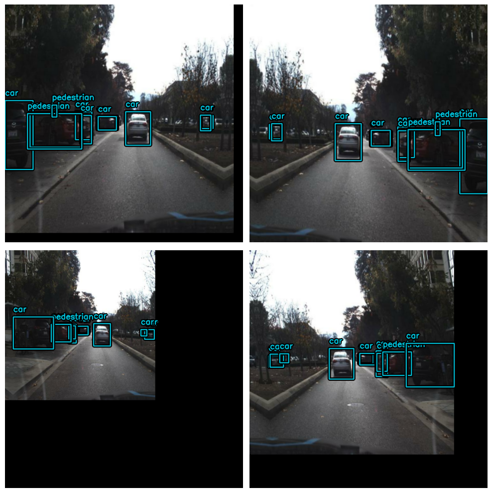
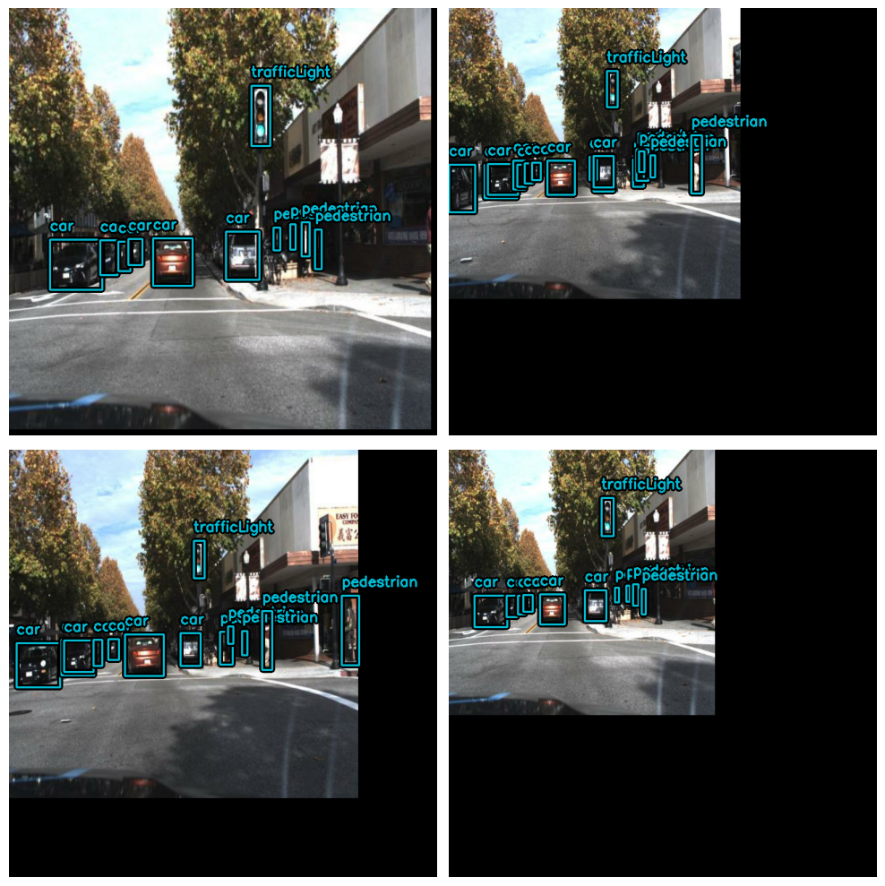
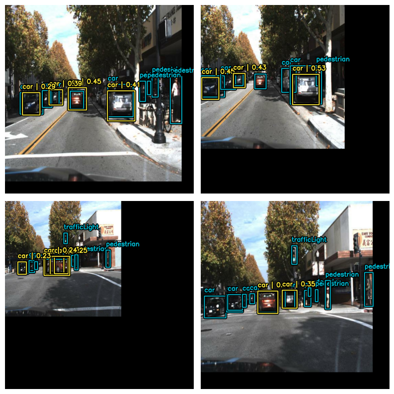

Efficient Object Detection with YOLOV8 and KerasCV
Author: Gitesh Chawda
Date created: 2023/06/26
Last modified: 2023/06/26
Description: Train custom YOLOV8 object detection model with KerasCV.

Introduction
KerasCV is an extension of Keras for computer vision tasks. In this example, we'll see how to train a YOLOV8 object detection model using KerasCV.
KerasCV includes pre-trained models for popular computer vision datasets, such as ImageNet, COCO, and Pascal VOC, which can be used for transfer learning. KerasCV also provides a range of visualization tools for inspecting the intermediate representations learned by the model and for visualizing the results of object detection and segmentation tasks.
If you're interested in learning about object detection using KerasCV, I highly suggest taking a look at the guide created by lukewood. This resource, available at Object Detection With KerasCV, provides a comprehensive overview of the fundamental concepts and techniques required for building object detection models with KerasCV.
!pip install --upgrade git+https://github.com/keras-team/keras-cv -q
[33mWARNING: Running pip as the 'root' user can result in broken permissions and conflicting behaviour with the system package manager. It is recommended to use a virtual environment instead: https://pip.pypa.io/warnings/venv[0m[33m
[0m
Setup
import os
from tqdm.auto import tqdm
import xml.etree.ElementTree as ET
import tensorflow as tf
from tensorflow import keras
import keras_cv
from keras_cv import bounding_box
from keras_cv import visualization
/opt/conda/lib/python3.10/site-packages/tensorflow_io/python/ops/__init__.py:98: UserWarning: unable to load libtensorflow_io_plugins.so: unable to open file: libtensorflow_io_plugins.so, from paths: ['/opt/conda/lib/python3.10/site-packages/tensorflow_io/python/ops/libtensorflow_io_plugins.so']
caused by: ['/opt/conda/lib/python3.10/site-packages/tensorflow_io/python/ops/libtensorflow_io_plugins.so: undefined symbol: _ZN3tsl6StatusC1EN10tensorflow5error4CodeESt17basic_string_viewIcSt11char_traitsIcEENS_14SourceLocationE']
warnings.warn(f"unable to load libtensorflow_io_plugins.so: {e}")
/opt/conda/lib/python3.10/site-packages/tensorflow_io/python/ops/__init__.py:104: UserWarning: file system plugins are not loaded: unable to open file: libtensorflow_io.so, from paths: ['/opt/conda/lib/python3.10/site-packages/tensorflow_io/python/ops/libtensorflow_io.so']
caused by: ['/opt/conda/lib/python3.10/site-packages/tensorflow_io/python/ops/libtensorflow_io.so: undefined symbol: _ZTVN10tensorflow13GcsFileSystemE']
warnings.warn(f"file system plugins are not loaded: {e}")
Load Data
For this guide, we will be utilizing the Self-Driving Car Dataset obtained from roboflow. In order to make the dataset more manageable, I have extracted a subset of the larger dataset, which originally consisted of 15,000 data samples. From this subset, I have chosen 7,316 samples for model training.
To simplify the task at hand and focus our efforts, we will be working with a reduced number of object classes. Specifically, we will be considering five primary classes for detection and classification: car, pedestrian, traffic light, biker, and truck. These classes represent some of the most common and significant objects encountered in the context of self-driving cars.
By narrowing down the dataset to these specific classes, we can concentrate on building a robust object detection model that can accurately identify and classify these important objects.
The TensorFlow Datasets library provides a convenient way to download and use various datasets, including the object detection dataset. This can be a great option for those who want to quickly start working with the data without having to manually download and preprocess it.
You can view various object detection datasets here TensorFlow Datasets
However, in this code example, we will demonstrate how to load the dataset from scratch
using TensorFlow's tf.data pipeline. This approach provides more flexibility and allows
you to customize the preprocessing steps as needed.
Loading custom datasets that are not available in the TensorFlow Datasets library is one
of the main advantages of using the tf.data pipeline. This approach allows you to
create a custom data preprocessing pipeline tailored to the specific needs and
requirements of your dataset.
Hyperparameters
SPLIT_RATIO = 0.2
BATCH_SIZE = 4
LEARNING_RATE = 0.001
EPOCH = 5
GLOBAL_CLIPNORM = 10.0
A dictionary is created to map each class name to a unique numerical identifier. This mapping is used to encode and decode the class labels during training and inference in object detection tasks.
class_ids = [
"car",
"pedestrian",
"trafficLight",
"biker",
"truck",
]
class_mapping = dict(zip(range(len(class_ids)), class_ids))
# Path to images and annotations
path_images = "/kaggle/input/dataset/data/images/"
path_annot = "/kaggle/input/dataset/data/annotations/"
# Get all XML file paths in path_annot and sort them
xml_files = sorted(
[
os.path.join(path_annot, file_name)
for file_name in os.listdir(path_annot)
if file_name.endswith(".xml")
]
)
# Get all JPEG image file paths in path_images and sort them
jpg_files = sorted(
[
os.path.join(path_images, file_name)
for file_name in os.listdir(path_images)
if file_name.endswith(".jpg")
]
)
The function below reads the XML file and finds the image name and path, and then iterates over each object in the XML file to extract the bounding box coordinates and class labels for each object.
The function returns three values: the image path, a list of bounding boxes (each
represented as a list of four floats: xmin, ymin, xmax, ymax), and a list of class IDs
(represented as integers) corresponding to each bounding box. The class IDs are obtained
by mapping the class labels to integer values using a dictionary called class_mapping.
def parse_annotation(xml_file):
tree = ET.parse(xml_file)
root = tree.getroot()
image_name = root.find("filename").text
image_path = os.path.join(path_images, image_name)
boxes = []
classes = []
for obj in root.iter("object"):
cls = obj.find("name").text
classes.append(cls)
bbox = obj.find("bndbox")
xmin = float(bbox.find("xmin").text)
ymin = float(bbox.find("ymin").text)
xmax = float(bbox.find("xmax").text)
ymax = float(bbox.find("ymax").text)
boxes.append([xmin, ymin, xmax, ymax])
class_ids = [
list(class_mapping.keys())[list(class_mapping.values()).index(cls)]
for cls in classes
]
return image_path, boxes, class_ids
image_paths = []
bbox = []
classes = []
for xml_file in tqdm(xml_files):
image_path, boxes, class_ids = parse_annotation(xml_file)
image_paths.append(image_path)
bbox.append(boxes)
classes.append(class_ids)
0%| | 0/7316 [00:00<?, ?it/s]
Here we are using tf.ragged.constant to create ragged tensors from the bbox and
classes lists. A ragged tensor is a type of tensor that can handle varying lengths of
data along one or more dimensions. This is useful when dealing with data that has
variable-length sequences, such as text or time series data.
classes = [
[8, 8, 8, 8, 8], # 5 classes
[12, 14, 14, 14], # 4 classes
[1], # 1 class
[7, 7], # 2 classes
...]
bbox = [
[[199.0, 19.0, 390.0, 401.0],
[217.0, 15.0, 270.0, 157.0],
[393.0, 18.0, 432.0, 162.0],
[1.0, 15.0, 226.0, 276.0],
[19.0, 95.0, 458.0, 443.0]], #image 1 has 4 objects
[[52.0, 117.0, 109.0, 177.0]], #image 2 has 1 object
[[88.0, 87.0, 235.0, 322.0],
[113.0, 117.0, 218.0, 471.0]], #image 3 has 2 objects
...]
In this case, the bbox and classes lists have different lengths for each image,
depending on the number of objects in the image and the corresponding bounding boxes and
classes. To handle this variability, ragged tensors are used instead of regular tensors.
Later, these ragged tensors are used to create a tf.data.Dataset using the
from_tensor_slices method. This method creates a dataset from the input tensors by
slicing them along the first dimension. By using ragged tensors, the dataset can handle
varying lengths of data for each image and provide a flexible input pipeline for further
processing.
bbox = tf.ragged.constant(bbox)
classes = tf.ragged.constant(classes)
image_paths = tf.ragged.constant(image_paths)
data = tf.data.Dataset.from_tensor_slices((image_paths, classes, bbox))
Splitting data in training and validation data
# Determine the number of validation samples
num_val = int(len(xml_files) * SPLIT_RATIO)
# Split the dataset into train and validation sets
val_data = data.take(num_val)
train_data = data.skip(num_val)
Let's see about data loading and bounding box formatting to get things going. Bounding boxes in KerasCV have a predetermined format. To do this, you must bundle your bounding boxes into a dictionary that complies with the requirements listed below:
bounding_boxes = {
# num_boxes may be a Ragged dimension
'boxes': Tensor(shape=[batch, num_boxes, 4]),
'classes': Tensor(shape=[batch, num_boxes])
}
The dictionary has two keys, 'boxes' and 'classes', each of which maps to a
TensorFlow RaggedTensor or Tensor object. The 'boxes' Tensor has a shape of [batch,
num_boxes, 4], where batch is the number of images in the batch and num_boxes is the
maximum number of bounding boxes in any image. The 4 represents the four values needed to
define a bounding box: xmin, ymin, xmax, ymax.
The 'classes' Tensor has a shape of [batch, num_boxes], where each element represents
the class label for the corresponding bounding box in the 'boxes' Tensor. The num_boxes
dimension may be ragged, which means that the number of boxes may vary across images in
the batch.
Final dict should be:
{"images": images, "bounding_boxes": bounding_boxes}
def load_image(image_path):
image = tf.io.read_file(image_path)
image = tf.image.decode_jpeg(image, channels=3)
return image
def load_dataset(image_path, classes, bbox):
# Read Image
image = load_image(image_path)
bounding_boxes = {
"classes": tf.cast(classes, dtype=tf.float32),
"boxes": bbox,
}
return {"images": tf.cast(image, tf.float32), "bounding_boxes": bounding_boxes}
Here we create a layer that resizes images to 640x640 pixels, while maintaining the
original aspect ratio. The bounding boxes associated with the image are specified in the
xyxy format. If necessary, the resized image will be padded with zeros to maintain the
original aspect ratio.
Bounding Box Formats supported by KerasCV: 1. CENTER_XYWH 2. XYWH 3. XYXY 4. REL_XYXY 5. REL_XYWH 6. YXYX 7. REL_YXYX
You can read more about KerasCV bounding box formats in docs.
Furthermore, it is possible to perform format conversion between any two pairs:
boxes = keras_cv.bounding_box.convert_format(
bounding_box,
images=image,
source="xyxy", # Original Format
target="xywh", # Target Format (to which we want to convert)
)
Data Augmentation
One of the most challenging tasks when constructing object detection pipelines is data augmentation. It involves applying various transformations to the input images to increase the diversity of the training data and improve the model's ability to generalize. However, when working with object detection tasks, it becomes even more complex as these transformations need to be aware of the underlying bounding boxes and update them accordingly.
KerasCV provides native support for bounding box augmentation. KerasCV offers an extensive collection of data augmentation layers specifically designed to handle bounding boxes. These layers intelligently adjust the bounding box coordinates as the image is transformed, ensuring that the bounding boxes remain accurate and aligned with the augmented images.
By leveraging KerasCV's capabilities, developers can conveniently integrate bounding box-friendly data augmentation into their object detection pipelines. By performing on-the-fly augmentation within a tf.data pipeline, the process becomes seamless and efficient, enabling better training and more accurate object detection results.
augmenter = keras.Sequential(
layers=[
keras_cv.layers.RandomFlip(mode="horizontal", bounding_box_format="xyxy"),
keras_cv.layers.RandomShear(
x_factor=0.2, y_factor=0.2, bounding_box_format="xyxy"
),
keras_cv.layers.JitteredResize(
target_size=(640, 640), scale_factor=(0.75, 1.3), bounding_box_format="xyxy"
),
]
)
Creating Training Dataset
train_ds = train_data.map(load_dataset, num_parallel_calls=tf.data.AUTOTUNE)
train_ds = train_ds.shuffle(BATCH_SIZE * 4)
train_ds = train_ds.ragged_batch(BATCH_SIZE, drop_remainder=True)
train_ds = train_ds.map(augmenter, num_parallel_calls=tf.data.AUTOTUNE)
Creating Validation Dataset
resizing = keras_cv.layers.JitteredResize(
target_size=(640, 640),
scale_factor=(0.75, 1.3),
bounding_box_format="xyxy",
)
val_ds = val_data.map(load_dataset, num_parallel_calls=tf.data.AUTOTUNE)
val_ds = val_ds.shuffle(BATCH_SIZE * 4)
val_ds = val_ds.ragged_batch(BATCH_SIZE, drop_remainder=True)
val_ds = val_ds.map(resizing, num_parallel_calls=tf.data.AUTOTUNE)
Visualization
def visualize_dataset(inputs, value_range, rows, cols, bounding_box_format):
inputs = next(iter(inputs.take(1)))
images, bounding_boxes = inputs["images"], inputs["bounding_boxes"]
visualization.plot_bounding_box_gallery(
images,
value_range=value_range,
rows=rows,
cols=cols,
y_true=bounding_boxes,
scale=5,
font_scale=0.7,
bounding_box_format=bounding_box_format,
class_mapping=class_mapping,
)
visualize_dataset(
train_ds, bounding_box_format="xyxy", value_range=(0, 255), rows=2, cols=2
)
visualize_dataset(
val_ds, bounding_box_format="xyxy", value_range=(0, 255), rows=2, cols=2
)


We need to extract the inputs from the preprocessing dictionary and get them ready to be fed into the model.
def dict_to_tuple(inputs):
return inputs["images"], inputs["bounding_boxes"]
train_ds = train_ds.map(dict_to_tuple, num_parallel_calls=tf.data.AUTOTUNE)
train_ds = train_ds.prefetch(tf.data.AUTOTUNE)
val_ds = val_ds.map(dict_to_tuple, num_parallel_calls=tf.data.AUTOTUNE)
val_ds = val_ds.prefetch(tf.data.AUTOTUNE)
Creating Model
YOLOv8 is a cutting-edge YOLO model that is used for a variety of computer vision tasks, such as object detection, image classification, and instance segmentation. Ultralytics, the creators of YOLOv5, also developed YOLOv8, which incorporates many improvements and changes in architecture and developer experience compared to its predecessor. YOLOv8 is the latest state-of-the-art model that is highly regarded in the industry.
Below table compares the performance metrics of five different YOLOv8 models with different sizes (measured in pixels): YOLOv8n, YOLOv8s, YOLOv8m, YOLOv8l, and YOLOv8x. The metrics include mean average precision (mAP) values at different intersection-over-union (IoU) thresholds for validation data, inference speed on CPU with ONNX format and A100 TensorRT, number of parameters, and number of floating-point operations (FLOPs) (both in millions and billions, respectively). As the size of the model increases, the mAP, parameters, and FLOPs generally increase while the speed decreases. YOLOv8x has the highest mAP, parameters, and FLOPs but also the slowest inference speed, while YOLOv8n has the smallest size, fastest inference speed, and lowest mAP, parameters, and FLOPs.
| Model |
size
(pixels) | mAPval
50-95 | Speed
CPU ONNX
(ms) |
Speed
A100 TensorRT
(ms) | params
(M) | FLOPs
(B) |
| ------------------------------------------------------------------------------------ |
--------------------- | -------------------- | ------------------------------ |
----------------------------------- | ------------------ | ----------------- |
| YOLOv8n | 640 | 37.3 | 80.4
| 0.99 | 3.2 | 8.7 |
| YOLOv8s | 640 | 44.9 | 128.4
| 1.20 | 11.2 | 28.6 |
| YOLOv8m | 640 | 50.2 | 234.7
| 1.83 | 25.9 | 78.9 |
| YOLOv8l | 640 | 52.9 | 375.2
| 2.39 | 43.7 | 165.2 |
| YOLOv8x | 640 | 53.9 | 479.1
| 3.53 | 68.2 | 257.8 |
You can read more about YOLOV8 and its architecture in this RoboFlow Blog
First we will create a instance of backbone which will be used by our yolov8 detector class.
YOLOV8 Backbones available in KerasCV:
- Without Weights:
1. yolo_v8_xs_backbone
2. yolo_v8_s_backbone
3. yolo_v8_m_backbone
4. yolo_v8_l_backbone
5. yolo_v8_xl_backbone
- With Pre-trained coco weight:
backbone = keras_cv.models.YOLOV8Backbone.from_preset(
"yolo_v8_s_backbone_coco" # We will use yolov8 small backbone with coco weights
)
1. yolo_v8_xs_backbone_coco
2. yolo_v8_s_backbone_coco
2. yolo_v8_m_backbone_coco
2. yolo_v8_l_backbone_coco
2. yolo_v8_xl_backbone_coco
Downloading data from https://storage.googleapis.com/keras-cv/models/yolov8/coco/yolov8_s_backbone.h5
20596968/20596968 [==============================] - 0s 0us/step
Next, let's build a YOLOV8 model using the YOLOV8Detector, which accepts a feature
extractor as the backbone argument, a num_classes argument that specifies the number
of object classes to detect based on the size of the class_mapping list, a
bounding_box_format argument that informs the model of the format of the bbox in the
dataset, and a finally, the feature pyramid network (FPN) depth is specified by the
fpn_depth argument.
It is simple to build a YOLOV8 using any of the aforementioned backbones thanks to KerasCV.
yolo = keras_cv.models.YOLOV8Detector(
num_classes=len(class_mapping),
bounding_box_format="xyxy",
backbone=backbone,
fpn_depth=1,
)
Compile the Model
Loss used for YOLOV8
-
Classification Loss: This loss function calculates the discrepancy between anticipated class probabilities and actual class probabilities. In this instance,
binary_crossentropy, a prominent solution for binary classification issues, is Utilized. We Utilized binary crossentropy since each thing that is identified is either classed as belonging to or not belonging to a certain object class (such as a person, a car, etc.). -
Box Loss:
box_lossis the loss function used to measure the difference between the predicted bounding boxes and the ground truth. In this case, the Complete IoU (CIoU) metric is used, which not only measures the overlap between predicted and ground truth bounding boxes but also considers the difference in aspect ratio, center distance, and box size. Together, these loss functions help optimize the model for object detection by minimizing the difference between the predicted and ground truth class probabilities and bounding boxes.
optimizer = tf.keras.optimizers.Adam(
learning_rate=LEARNING_RATE,
global_clipnorm=GLOBAL_CLIPNORM,
)
yolo.compile(
optimizer=optimizer, classification_loss="binary_crossentropy", box_loss="ciou"
)
COCO Metric Callback
We will be using BoxCOCOMetrics from KerasCV to evaluate the model and calculate the
Map(Mean Average Precision) score, Recall and Precision. We also save our model when the
mAP score improves.
class EvaluateCOCOMetricsCallback(keras.callbacks.Callback):
def __init__(self, data, save_path):
super().__init__()
self.data = data
self.metrics = keras_cv.metrics.BoxCOCOMetrics(
bounding_box_format="xyxy",
evaluate_freq=1e9,
)
self.save_path = save_path
self.best_map = -1.0
def on_epoch_end(self, epoch, logs):
self.metrics.reset_state()
for batch in self.data:
images, y_true = batch[0], batch[1]
y_pred = self.model.predict(images, verbose=0)
self.metrics.update_state(y_true, y_pred)
metrics = self.metrics.result(force=True)
logs.update(metrics)
current_map = metrics["MaP"]
if current_map > self.best_map:
self.best_map = current_map
self.model.save(self.save_path) # Save the model when mAP improves
return logs
Train the Model
yolo.fit(
train_ds,
validation_data=val_ds,
epochs=3,
callbacks=[EvaluateCOCOMetricsCallback(val_ds, "model.h5")],
)
Epoch 1/3
1463/1463 [==============================] - 633s 390ms/step - loss: 10.1535 - box_loss: 2.5659 - class_loss: 7.5876 - val_loss: 3.9852 - val_box_loss: 3.1973 - val_class_loss: 0.7879 - MaP: 0.0095 - MaP@[IoU=50]: 0.0193 - MaP@[IoU=75]: 0.0074 - MaP@[area=small]: 0.0021 - MaP@[area=medium]: 0.0164 - MaP@[area=large]: 0.0010 - Recall@[max_detections=1]: 0.0096 - Recall@[max_detections=10]: 0.0160 - Recall@[max_detections=100]: 0.0160 - Recall@[area=small]: 0.0034 - Recall@[area=medium]: 0.0283 - Recall@[area=large]: 0.0010
Epoch 2/3
1463/1463 [==============================] - 554s 378ms/step - loss: 2.6961 - box_loss: 2.2861 - class_loss: 0.4100 - val_loss: 3.8292 - val_box_loss: 3.0052 - val_class_loss: 0.8240 - MaP: 0.0077 - MaP@[IoU=50]: 0.0197 - MaP@[IoU=75]: 0.0043 - MaP@[area=small]: 0.0075 - MaP@[area=medium]: 0.0126 - MaP@[area=large]: 0.0050 - Recall@[max_detections=1]: 0.0088 - Recall@[max_detections=10]: 0.0154 - Recall@[max_detections=100]: 0.0154 - Recall@[area=small]: 0.0075 - Recall@[area=medium]: 0.0191 - Recall@[area=large]: 0.0280
Epoch 3/3
1463/1463 [==============================] - 558s 381ms/step - loss: 2.5930 - box_loss: 2.2018 - class_loss: 0.3912 - val_loss: 3.4796 - val_box_loss: 2.8472 - val_class_loss: 0.6323 - MaP: 0.0145 - MaP@[IoU=50]: 0.0398 - MaP@[IoU=75]: 0.0072 - MaP@[area=small]: 0.0077 - MaP@[area=medium]: 0.0227 - MaP@[area=large]: 0.0079 - Recall@[max_detections=1]: 0.0120 - Recall@[max_detections=10]: 0.0257 - Recall@[max_detections=100]: 0.0258 - Recall@[area=small]: 0.0093 - Recall@[area=medium]: 0.0396 - Recall@[area=large]: 0.0226
<keras.callbacks.History at 0x7f3e01ca6d70>
Visualize Predictions
def visualize_detections(model, dataset, bounding_box_format):
images, y_true = next(iter(dataset.take(1)))
y_pred = model.predict(images)
y_pred = bounding_box.to_ragged(y_pred)
visualization.plot_bounding_box_gallery(
images,
value_range=(0, 255),
bounding_box_format=bounding_box_format,
y_true=y_true,
y_pred=y_pred,
scale=4,
rows=2,
cols=2,
show=True,
font_scale=0.7,
class_mapping=class_mapping,
)
visualize_detections(yolo, dataset=val_ds, bounding_box_format="xyxy")
1/1 [==============================] - 0s 115ms/step
